Hermes2D Tutorial: Part II (Automatic Adaptivity)¶
So far we have not paid any attention to the accuracy of the results. In general, a computation on a fixed mesh is not likely to be very accurate. There is a need for adaptive mesh refinement (AMR) that improves the quality of the approximation by refining mesh elements or increases the polynomial degree of approximation where the approximation is bad.
Adaptive h-FEM and hp-FEM¶
In traditional low-order FEM, refining an element is not algorithmically complicated, and so the most difficult part is to find out what elements should be refined. To do this, people employ various techniques ranging from rigorous guaranteed a-posteriori error estimates to heuristic criteria such as residual error indicators, error indicators based on steep gradients, etc. Unfortunately, none of these approaches is suitable for real-life multiphysics coupled problems or higher-order finite element methods: Rigorous guaranteed error estimates only exist for very simple problems (such as linear elliptic PDE), and moreover only for low-order finite elements (such as piecewise linear approximations). Note that virtually no a-posteriori error estimates capable of guiding automatic hp-adaptivity are available even for simplest elliptic problems, this will be discussed in a moment. The heuristic techniques listed above are not employed in Hermes since they may fail in non-standard situations, and because they lack a transparent relation to the true approximation error.
Adaptive low-order FEM is known to be notoriously inefficient, and practitioners are rightfully skeptical of it. The reason is its extremely slow convergence that makes large computations virtually freeze without getting anywhere. This is illustrated in the following graph that compares a typical convergence of adaptive FEM with linear elements, adaptive FEM with quadratic elements, and adaptive hp-FEM:

Note that the linear FEM would need in the order of 1,000,000,000,000,000,000 degrees of freedom (DOF) to reach a level of accuracy where the hp-FEM is with less than 10,000 DOF. These convergence curves are typical representative examples, confirmed with many numerical experiments of independent researchers, and supported with theory. The horizontal axis shows (in linear scale) the number of degrees of freedom (= size of the stiffness matrix) that increases during automatic adaptivity. The vertical one shows the approximation error (in logarithmic scale). Note that in all three cases, the convergence is similar during a short initial phase. However, with the hp-FEM the convergence becomes faster and faster as the adaptivity progresses. Note that low-order FEM is doomed to such slow convergence by its poor approximation properties - this cannot be fixed no matter how smart the adaptivity algorithm might be.
In order to obtain fast, usable adaptivity (the red curve), one has to resort to adaptive hp-FEM. The hp-FEM takes advantage of the following facts:
- Large high-degree elements approximate smooth parts of solution much better than small linear ones. The benchmark smooth-iso illustrates this - spend a few minutes to check it out, the results are truly impressive. In the Hermes2D repository, it can be found in the directory benchmarks/.
- This holds the other way where the solution is not smooth, i.e., singularities, steep gradients, oscillations and such are approximated best using locally small low-order elements.
- In order to capture efficiently anisotropic solution behavior, one needs adaptivity algorithms
that can refine meshes anisotropically both in
 and
and  . Often this is the case with
boundary layers (viscous flows, singularly perturbed problems, etc.). This is illustrated
in benchmarks
smooth-aniso-x and
boundary layer. However,
solutions without boundary layers can have significant anisotropic behavior too, as illustrated
in benchmark line singularity.
. Often this is the case with
boundary layers (viscous flows, singularly perturbed problems, etc.). This is illustrated
in benchmarks
smooth-aniso-x and
boundary layer. However,
solutions without boundary layers can have significant anisotropic behavior too, as illustrated
in benchmark line singularity.
Large number of possible element refinements in ‘hp’-FEM¶
Automatic adaptivity in the hp-FEM is substantially different from adaptivity in low-order FEM, since every element can be refined in many different ways. The following figure shows several illustrative refinement candidates for a fourth-order element.

Of course, the number of possible element refinements is implementation-dependent.
In general it is very low in or adaptivity, much higher in  adaptivity,
and it rises even more when anisotropic refinements are enabled. This is why Hermes
has eight different adaptivity options P_ISO, P_ANISO, H_ISO, H_ANISO,
HP_ISO, HP_ANISO_P, HP_ANISO_H, HP_ANISO. In this ordering, usually P_ISO yields the
worst results and HP_ANISO the best. In the most general HP_ANISO
option, around 100 refinement candidates for each element are considered.
Naturally, the adaptivity algorithm takes progressively more time as more
refinement candidates are considered. The difference between the HP_ANISO_H
option (next best to HP_ANISO) and HP_ANISO is quite significant. So, this is
where the user has to make a choice based on his a-priori knowledge of the
solution behavior.
adaptivity,
and it rises even more when anisotropic refinements are enabled. This is why Hermes
has eight different adaptivity options P_ISO, P_ANISO, H_ISO, H_ANISO,
HP_ISO, HP_ANISO_P, HP_ANISO_H, HP_ANISO. In this ordering, usually P_ISO yields the
worst results and HP_ANISO the best. In the most general HP_ANISO
option, around 100 refinement candidates for each element are considered.
Naturally, the adaptivity algorithm takes progressively more time as more
refinement candidates are considered. The difference between the HP_ANISO_H
option (next best to HP_ANISO) and HP_ANISO is quite significant. So, this is
where the user has to make a choice based on his a-priori knowledge of the
solution behavior.
Due to the large number of refinement options, classical error estimators (that provide a constant error estimate per element) cannot be used to guide automatic hp-adaptivity. For this, one needs to know the shape of the approximation error.
In analogy to the most successful adaptive ODE solvers,
Hermes uses a pair of approximations with different orders of accuracy to obtain
this information: coarse mesh solution and
fine mesh solution. The initial coarse mesh is read from the mesh file,
and the initial fine mesh is created through its global refinement both in
and .
The fine mesh solution is the approximation of interest both during the adaptive
process and at the end of computation. The coarse mesh solution represents its
low-order part. In all adaptivity examples in Hermes, the coarse mesh solution
can be turned off and a global orthogonal projection of the fine mesh solution
on the coarse mesh can be used instead. In most cases, this yields a better
convergence behavior than using the coarse mesh solve (and the projection
problem is always linear and better conditioned than solving on the coarse mesh).
Note that this approach is PDE independent, which is truly great for multiphysics coupled problems. Currently, Hermes does not use a single analytical error estimate or any other technique that would narrow down its applicability to just some equations or just low-order FEM.
The obvious disadvantage of the Hermes approach to automatic adaptivity is its higher computational cost, especially in 3D. We are aware of this fact and would not mind at all replacing it with some cheaper technique (as long as it also is PDE-independent, works for elements of high orders, and can be successfully used to guide hp-adaptivity). So far, however, no alternatives meeting these criteria exist yet to our best knowledge.
Understanding Convergence Rates¶
Hermes provides convergence graphs for every adaptive computation. Therefore,
let us spend a short moment explaining their meaning.
The classical notion of 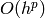 convergence rate is related to sequences of
uniform meshes with a gradually decreasing diameter . In  spatial dimensions,
the diameter of a uniform mesh is related to the number of degrees of freedom
spatial dimensions,
the diameter of a uniform mesh is related to the number of degrees of freedom  through the relation
through the relation
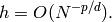
Therefore a slope of  on the log-log scale means that 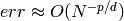
or 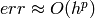. When local refinements are enabled, the meaning of
convergence rate loses its meaning, and one should switch to convergence in terms of
the number of degrees of freedom (DOF) or CPU time - Hermes provides both.
on the log-log scale means that 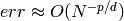
or 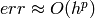. When local refinements are enabled, the meaning of
convergence rate loses its meaning, and one should switch to convergence in terms of
the number of degrees of freedom (DOF) or CPU time - Hermes provides both.
Algebraic convergence of adaptive -FEM¶
When using elements of degree , the convergence rate of adaptive -FEM will not exceed the
one predicted for uniformly refined meshes (this can be explained using
mathematical analysis). Nevertheless, the convergence may be faster due to a different
constant in front of the 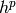 term. This is illustrated in the following two figures,
both of which are related to a 2D problem with known exact solution. The first pair of
graphs corresponds to adaptive -FEM with linear elements. The slope on the log-log
graph is -1/2 which means first-order convergence, as predicted by theory.

The next pair of convergence graphs corresponds to adaptive -FEM with quadratic elements.
The slope on the log-log graph is -1, which means that the convergence is quadratic as
predicted by theory.

Note that one always should look at the end of the convergence curve, not at the beginning. The automatic adaptivity in Hermes is guided with the so-called reference solution, which is an approximation on a globally-refined mesh. In early stages of adaptivity, the reference solution and in turn also the error estimate usually are not sufficiently accurate to deliver the expected convergence rates.
Exponential convergence of adaptive -FEM¶
It is predicted by theory that adaptive -FEM should attain
exponential convergence rate. This means that the slope of the
convergence graph is steadily increasing, as shown in the
following figure.

While this often is the case with adaptive -FEM, there are
problems whose difficulty is such that the convergence is not
exponential. Or at least not during a long pre-asymptotic
stage of adaptivity. This may happen, for example, when the solution
contains an extremely strong singularity. Then basically all error
is concentrated there, and all adaptive methods will do the same,
which is to throw into the singularity as many small low-order
elements as possible. Then the convergence of adaptive -FEM
and -FEM may be very similar (usually quite poor).
Estimated vs. exact convergence rates¶
Whenever exact solution is available, Hermes provides both estimated error (via the reference solution) as well as the exact error. Thus the user can see the quality of the error estimate. Note that the estimated error usually is slightly less than the exact one, but during adaptivity they quickly converge together and become virtually identical. This is shown in the figure below.

In problems with extremely strong singularities the difference between the exact and estimated error can be significant. This is illustrated in the following graph that belongs to the benchmark kellogg.

Electrostatic Micromotor Problem (10)¶
Git reference: Tutorial example 10-adapt. Long version: 10-adapt-long.
Let us demonstrate the use of adaptive h-FEM and hp-FEM on a linear elliptic problem describing an electrostatic micromotor. This is a MEMS device free of any coils, and thus (as opposed to classical electromotors) resistive to strong electromagnetic waves.
The following figure shows a symmetric half of the domain  (dimensions need to be scaled with 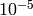 and are in meters):
(dimensions need to be scaled with 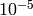 and are in meters):

The subdomain 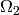 represents the moving part of the domain and the area bounded by 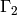
represents the electrodes that are fixed. The distribution of the electrostatic potential  is governed by the equation
is governed by the equation
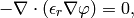
equipped with the Dirichlet boundary conditions
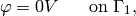
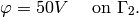
The relative permittivity 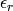 is piecewise-constant, 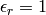 in 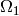 and 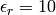 in . The weak formulation reads
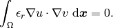
The piecewise constant parameter is handled by defining two bilinear forms in the code, one for and the other for . The two different materials are distinguished by different element markers OMEGA_1 = 1 and OMEGA_2 = 2 in the mesh file, and two different weak forms are assigned to the corresponding markers during the registration of the forms:
// Initialize the weak formulation.
WeakForm wf;
wf.add_matrix_form(callback(biform1), H2D_SYM, OMEGA_1);
wf.add_matrix_form(callback(biform2), H2D_SYM, OMEGA_2);
Refinement selector¶
The principal part of the example is the main adaptivity loop. However, before the loop is entered, a refinement selector should be initialized:
H1ProjBasedSelector selector(CAND_LIST, CONV_EXP, H2DRS_DEFAULT_ORDER);
The selector is used by the class H1Adapt to determine how an element should be refined. For that purpose, the selector does following steps:
- It generates candidates (proposed refinements).
- It estimates their local errors by projecting the reference solution onto their FE spaces.
- It calculates the number of degree of freedom (DOF) contributed by each candidate.
- It calculates a score for each candidate, and sorts them according to their scores.
- It selects a candidate with the highest score. If the next candidate has almost the same score and symmetric mesh is preferred, it skips both of them. More detailed explanation of this will follow.
By default, the score is
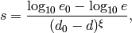
where  and are an estimated error and an estimated number of DOF of a candidate respectively, 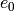 and 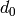 are an estimated error and an estimated number of DOF of the examined element respectively, and 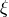 is a convergence exponent.
and are an estimated error and an estimated number of DOF of a candidate respectively, 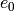 and 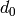 are an estimated error and an estimated number of DOF of the examined element respectively, and 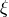 is a convergence exponent.
The first parameter CAND_LIST specifies which candidates are generated. In a case of quadrilaterals, all possible values and considered candidates are summarized in the following table:
The second parameter CONV_EXP is a convergence exponent used to calculate the score.
The third parameter specifies the the maximum considered order used in the resulting refinement. In this case, a constant H2DRS_DEFAULT_ORDER is used. The constant is defined by Hermes2D library and it corresponds to the maximum order supported by the selector. In this case, this is 9.
Furthermore, the selector allows you to weight errors though a method set_error_weights(). Error weights are applied before the error of a candidate is passed to the calculation of the score. Through this method it is possible to set a preference for a given type of a candidate, i.e., H-candidate, P-candidate, and ANISO-candidate. The error weights can be set anytime and setting error weights to appropriate values can lead to a lower number of DOF. However, the best values of weights depend on a solved problem.
In this particular case, a default error weights are used. The default weights prefer the P-candidate and they are defined as:
- H-candidate weight: 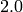 (see a constant H2DRS_DEFAULT_ERR_WEIGHT_H)
- P-candidate weight: 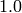 (see a constant H2DRS_DEFAULT_ERR_WEIGHT_P)
- ANISO-candidate weight: 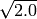 (see a constant H2DRS_DEFAULT_ERR_WEIGHT_ANISO)
Since these weights are default, it is not necessary to express them explicitly. Nevertheless, if expressed, a particular line of the code would be:
selector.set_error_weights(2.0, 1.0, sqrt(2.0));
Besides the error weights, the selector allows you to modify a default behaviour through the method set_option(). The behavior can be modified anytime. Currently, the method accepts following options:
- H2D_PREFER_SYMMETRIC_MESH: Prefer symmetric mesh when selection of the best candidate is done. If set and if two or more candidates has the same score, they are skipped. This option is set by default.
- H2D_APPLY_CONV_EXP_DOF: Use 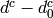, where
 is the convergence exponent, instead of 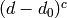 to evaluate the score. This options is not set by default.
is the convergence exponent, instead of 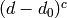 to evaluate the score. This options is not set by default.
In this case, default settings are used. If expressed explicitly, the code would be:
selector.set_option(H2D_PREFER_SYMMETRIC_MESH, true);
selector.set_option(H2D_APPLY_CONV_EXP_DOF, false);
Short version¶
If you prefer to avoid technical details of automatic adaptivity, fill the structure AdaptivityParamType with parameters ERR_STOP, NDOF_STOP, THRESHOLD, STRATEGY, and MESH_REGULARITY:
// Initialize adaptivity parameters.
AdaptivityParamType apt(ERR_STOP, NDOF_STOP, THRESHOLD, STRATEGY,
MESH_REGULARITY);
The algorithm will stop after the relative error estimate in percent drops below ERR_STOP or if the number of degrees of freedom exceeds NDOF_STOP. The meaning of the other three parameters will be explained below.
Next, just call the function solve_linear_adapt():
// Adaptivity loop.
Solution *sln = new Solution();
Solution *ref_sln = new Solution();
WinGeom* sln_win_geom = new WinGeom(0, 0, 400, 600);
WinGeom* mesh_win_geom = new WinGeom(410, 0, 400, 600);
bool verbose = true; // Print info during adaptivity.
// The NULL pointer means that we do not want the resulting coefficient vector.
solve_linear_adapt(&space, &wf, NULL, matrix_solver, H2D_H1_NORM, sln, ref_sln,
sln_win_geom, mesh_win_geom, &selector, &apt, verbose);
Here ‘sln’ and ‘ref_sln’ stand for solutions on the coarse and globally refined mesh, respectively, and the WinGeom structures hold positions and geometries for visualization of the coarse mesh solution and the mesh during adaptivity. The visualization can be turned off by providing NULL pointers. After adaptivity is finished, the Space contains the latest coarse mesh, and the user can request the coefficient vector by providing a non-NULL pointer to Vector as the third argument. The latest solutions on the coarse and globally refined meshes are in ‘sln’ and ‘ref_sln’.
Long version¶
The long version of this example, 10-adapt-long, exposes all details of the adaptivity algorithm. First one needs to initialize the matrix solver (as in example 03):
// Initialize matrix solver.
Matrix* mat; Vector* rhs; CommonSolver* solver;
init_matrix_solver(matrix_solver, get_num_dofs(space), mat, rhs, solver);
Next one can initialize views for the solution and mesh during adaptivity:
// Initialize views.
ScalarView s_view("Solution", new WinGeom(0, 0, 400, 600));
OrderView o_view("Mesh", new WinGeom(410, 0, 400, 600));
In order to plot convergence graphs, one can use the SimpleGraph class:
// DOF and CPU convergence graphs.
SimpleGraph graph_dof_est, graph_cpu_est;
This class will save convergence data as two numbers per line: either the number of DOF and error, or CPU time and error. A more advanced GnuplotGraph class is also available, see the file graph.h for more details.
Adaptivity loop
The adaptivity algorithm in Hermes needs a coarse mesh solution and a reference solution on globally refined mesh. These solutions are subtracted in each adaptivity step in order to obtain an error estimate (as a function). This function is used to decide which elements need to be refined as well as to select optimal hp-refinement for each element that needs to be refined. Hence the adaptivity loop begins with refining the mesh globally and calculating the reference solution:
// Adaptivity loop.
Solution *sln = new Solution();
Solution *ref_sln = new Solution();
int as = 1; bool done = false;
do
{
info("---- Adaptivity step %d:", as);
info("Solving on reference mesh.");
// Construct globally refined reference mesh
// and setup reference space.
Mesh *ref_mesh = new Mesh();
ref_mesh->copy(space->get_mesh());
ref_mesh->refine_all_elements();
Space* ref_space = space->dup(ref_mesh);
int order_increase = 1;
ref_space->copy_orders(space, order_increase);
// Solve the reference problem.
solve_linear(ref_space, &wf, matrix_solver, ref_sln);
In the next step, the reference solution is projected on the coarse mesh in order to extract its low-order part:
// Project the reference solution on the coarse mesh.
info("Projecting reference solution on coarse mesh.");
// NULL means that we do not want to know the resulting coefficient vector.
project_global(space, H2D_H1_NORM, ref_sln, sln, NULL);
The coarse and reference mesh approximations are inserted into the class Adapt and a global error estimate as well as element error estimates are calculated:
// Calculate element errors.
info("Calculating error (est).");
Adapt hp(space, H2D_H1_NORM);
hp.set_solutions(sln, ref_sln);
double err_est_rel = hp.calc_elem_errors(H2D_TOTAL_ERROR_REL | H2D_ELEMENT_ERROR_REL) * 100;
The error estimate is calculated as
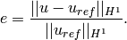
This example uses the H1-norm but Hcurl, Hdiv and L2 norms are also possible. If the problem is vector-valued (PDE system), arbitrary combinations are possible. This will be discussed later.
Finally, if err_est_rel is still above the threshold ERR_STOP, we perform mesh adaptation:
// If err_est too large, adapt the mesh.
if (err_est_rel < ERR_STOP) done = true;
else {
info("Adapting the coarse mesh.");
done = hp.adapt(&selector, THRESHOLD, STRATEGY, MESH_REGULARITY);
if (get_num_dofs(space) >= NDOF_STOP) done = true;
}
// Free reference space and mesh.
ref_space->free();
The constants THRESHOLD, STRATEGY and MESH_REGULARITY have the following meaning:
The constant STRATEGY indicates which adaptive strategy is used. In all cases, the strategy is applied to elements in an order defined through the error. If the user request to process an element outside this order, the element is processed regardless the strategy. Currently, Hermes2D supportes following strategies:
- STRATEGY == 0: Refine elements until sqrt(THRESHOLD) times total error is processed. If more elements have similar error refine all to keep the mesh symmetric.
- STRATEGY == 1: Refine all elements whose error is bigger than THRESHOLD times the error of the first processed element, i.e., the maximum error of an element.
- STRATEGY == 2: Refine all elements whose error is bigger than THRESHOLD.
The constant MESH_REGULARITY specifies maximum allowed level of hanging nodes: -1 means arbitrary-level hanging nodes (default), and 1, 2, 3, ... means 1-irregular mesh, 2-irregular mesh, etc. Hermes does not support adaptivity on regular meshes because of its extremely poor performance.
It is a good idea to spend some time playing with these parameters to get a feeling for adaptive hp-FEM. Also look at other adaptivity examples in the examples/ directory: layer, lshape deal with elliptic problems and have known exact solutions. So do examples screen, bessel for time-harmonic Maxwell’s equations. These examples allow you to compare the error estimates computed by Hermes with the true error. Examples crack, singpert show how to handle cracks and singularly perturbed problems, respectively. There are also more advanced examples illustrating automatic adaptivity for nonlinear problems solved via the Newton’s method, adaptive multimesh hp-FEM, adaptivity for time-dependent problems on dynamical meshes, etc.
But let’s return to the micromotor example for a moment again: The computation starts with a very coarse mesh consisting of a few quadrilaterals, some of which are moreover very ill-shaped. Thanks to the anisotropic refinement capabilities of the selector, the mesh quickly adapts to the solution and elements of reasonable shape are created near singularities, which occur at the corners of the electrode. Initially, all elements of the mesh are of a low degree, but as the hp-adaptive process progresses, the elements receive different polynomial degrees, depending on the local smoothness of the solution.
The gradient was visualized using the class VectorView. We have seen this in the previous section. We plug in the same solution for both vector components, but specify that its derivatives should be used:
gview.show(&sln, &sln, H2D_EPS_NORMAL, H2D_FN_DX_0, H2D_FN_DY_0);


Convergence graphs of adaptive h-FEM with linear elements, h-FEM with quadratic elements and hp-FEM are shown below.
The following graph shows convergence in terms of CPU time.
Multimesh hp-FEM¶
In multiphysics PDE systems (or just PDE systems) it can happen that one physical field (solution component) has a singularity or a boundary layer where other fields are smooth. If one approximates all fields on the same mesh, then the necessity to refine the mesh at the singularity or boundary layer implies new degrees of freedom for the smooth fields as well. This can be very wasteful indeed, as we will see in the next example that deals with a simplified Fitzhugh-Nagumo system. But let us first explain briefly the main idea of the multimesh discretization method that we developed to circumvent this problem.
Hermes makes it possible to approximate them on individual meshes. These meshes are not completely independent of each other – they have a common coarse mesh that we call master mesh. The master mesh is there for algorithmic purposes only, it may not even be used for discretization purposes: Every mesh in the system is obtained from it via an arbitrary sequence of elementary refinements. This is illustrated in the following figure, where (A) is the master mesh, (B) - (D) three different meshes (say, for a coupled problem with three equations), and (E) is the virtual union mesh that is used for assembling.
The union mesh is not constructed physically in the computer memory – merely it serves as a hint to correctly transform integration points while integrating over sub-elements of the elements of the existing meshes. The following figure shows the integration over an element 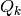 of the virtual union mesh, and what are the appropriate subelements of the existing elements where this integration is performed:

As a result, the multimesh discretization of the PDE system is monolithic in the sense that no physics is lost – all integrals in the discrete weak formulations are evaluated exactly up to the error in the numerical quadrature. In particular, we do not perform operator splitting or commit errors while transferring solution data between different meshes. The multimesh assembling in Hermes works with all meshes at the same time, there is no such thing as interpolating or projecting functions between different meshes. More details about this method can be found in the corresponding research article.
Adaptivity in the Multimesh hp-FEM¶
In principle, the adaptivity procedure for single PDE could be extended
directly to systems of PDEs. In other words, two spaces can be passed into a constructor of the class H1Adapt,
two coarse and two fine solutions can be passed into set_solutions(),
and finally, calc_error() and adapt() can be called as before. In this way, error estimates in
 norm are calculated for elements in both spaces independently and the
worst ones are refined. However, this approach is not optimal if the PDEs are
coupled, since an error caused in one solution component influences the errors
in other components and vice versa.
norm are calculated for elements in both spaces independently and the
worst ones are refined. However, this approach is not optimal if the PDEs are
coupled, since an error caused in one solution component influences the errors
in other components and vice versa.
Recall that in elliptic problems the bilinear form  defines the energetic inner product,
defines the energetic inner product,
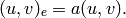
The norm induced by this product,
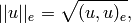
is called the energy norm. When measuring the error in the energy norm of the entire system, one can reduce the above-mentioned difficulties dramatically. When calculating the error on an element, the energy norm accounts also for the error caused by other solution components.
It is also worth mentioning that the adaptivity algorithm does not make distinctions between various meshes. The elements of all meshes in the system are put into one single array, sorted according to their estimated errors, and then the ones with the largest error are refined. In other words, it may happen that all elements marked for refinement will belong just to one mesh.
If norms of components are substantially different, it is more beneficial to use a relative error of an element rather than an absolute error. The relative error of an element is an absolute error divided by a norm of a component. This behavior can be requested while calling the method calc_error():
hp.calc_error(H2D_TOTAL_ERROR_REL | H2D_ELEMENT_ERROR_REL)
The input parameter of the method calc_error() is a combination that is a pair: one member of the pair has to be a constant `H2D_TOTAL_ERROR_*`, the other member has to be a constant `H2D_ELEMENT_ERROR_*`. If not specified, the default pair is `H2D_TOTAL_ERROR_REL | H2D_ELEMENT_ERROR_ABS`. Currently available contants are:
- `H2D_TOTAL_ERROR_REL`: Returned total error will be the absolute error divided by the total norm.
- `H2D_TOTAL_ERROR_ABS`: Returned total error will be the absolute error.
- `H2D_TOTAL_ERROR_REL`: Element error which is used to select elements for refinement will be an absolute error divided by the norm of the corresponding solution component.
- `H2D_TOTAL_ERROR_ABS`: Element error which is used to select elements for refinement will be the absolute error.
Simplified Fitzhugh-Nagumo System (11)¶
Git reference: Tutorial example 11-system-adapt. Long version: 11-system-adapt-long
We consider a simplified version of the Fitzhugh-Nagumo equation. This equation is a~prominent example of activator-inhibitor systems in two-component reaction-diffusion equations, It describes a prototype of an excitable system (e.g., a neuron) and its stationary form is
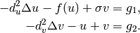
Here the unknowns  are the voltage and
are the voltage and  -gate, respectively,
The nonlinear function
-gate, respectively,
The nonlinear function
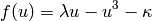
describes how an action potential travels through a nerve. Obviously this system is nonlinear.
In order to make it simpler for this tutorial, we replace the function 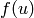 with just  :
:
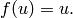
Our computational domain is the square  and we consider zero Dirichlet conditions
for both and . In order to enable fair convergence comparisons, we will use the following
functions as the exact solution:
and we consider zero Dirichlet conditions
for both and . In order to enable fair convergence comparisons, we will use the following
functions as the exact solution:
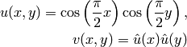
where
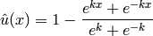
is the exact solution of the one-dimensional singularly perturbed problem
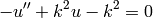
in  , equipped with zero Dirichlet boundary conditions. The functions
and defined above evidently satisfy the given boundary conditions, and
they also satisfy the equation, since we inserted them into the PDE system
and calculated the source functions
, equipped with zero Dirichlet boundary conditions. The functions
and defined above evidently satisfy the given boundary conditions, and
they also satisfy the equation, since we inserted them into the PDE system
and calculated the source functions  and 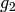 from there. These functions
are not extremely pretty, but they are not too bad either:
and 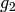 from there. These functions
are not extremely pretty, but they are not too bad either:
// Functions g_1 and g_2.
double g_1(double x, double y)
{
return (-cos(M_PI*x/2.)*cos(M_PI*y/2.) + SIGMA*(1. - (exp(K*x) + exp(-K*x))/(exp(K) + exp(-K)))
* (1. - (exp(K*y) + exp(-K*y))/(exp(K) + exp(-K))) + pow(M_PI,2.)*pow(D_u,2.)*cos(M_PI*x/2.)
*cos(M_PI*y/2.)/2.);
}
double g_2(double x, double y)
{
return ((1. - (exp(K*x) + exp(-K*x))/(exp(K) + exp(-K)))*(1. - (exp(K*y) + exp(-K*y))/(exp(K) + exp(-K)))
- pow(D_v,2.)*(-(1 - (exp(K*x) + exp(-K*x))/(exp(K) + exp(-K)))*(pow(K,2.)*exp(K*y) + pow(K,2.)*exp(-K*y))/(exp(K) + exp(-K))
- (1. - (exp(K*y) + exp(-K*y))/(exp(K) + exp(-K)))*(pow(K,2.)*exp(K*x) + pow(K,2.)*exp(-K*x))/(exp(K) + exp(-K))) -
cos(M_PI*x/2.)*cos(M_PI*y/2.));
}
The weak forms can be found in the file forms.cpp and they are registered as follows:
// Initialize the weak formulation.
WeakForm wf(2);
wf.add_matrix_form(0, 0, callback(bilinear_form_0_0));
wf.add_matrix_form(0, 1, callback(bilinear_form_0_1));
wf.add_matrix_form(1, 0, callback(bilinear_form_1_0));
wf.add_matrix_form(1, 1, callback(bilinear_form_1_1));
wf.add_vector_form(0, linear_form_0, linear_form_0_ord);
wf.add_vector_form(1, linear_form_1, linear_form_1_ord);
Beware that although each of the forms is actually symmetric, one cannot use the H2D_SYM flag as in the elasticity equations, since it has a slightly different meaning (see example 08-system).
Short version¶
For the short version it is enough to call the function solve_linear_adapt():
// Adaptivity loop.
Solution *u_sln = new Solution();
Solution *v_sln = new Solution();
Solution *ref_u_sln = new Solution();
Solution *ref_v_sln = new Solution();
ExactSolution u_exact(&u_mesh, uexact);
ExactSolution v_exact(&v_mesh, vexact);
bool verbose = true; // Print info during adaptivity.
// The NULL pointer means that we do not want the resulting coefficient vector.
solve_linear_adapt(Tuple<Space *>(&u_space, &v_space), &wf, NULL, matrix_solver,
Tuple<int>(H2D_H1_NORM, H2D_H1_NORM),
Tuple<Solution *>(u_sln, v_sln),
Tuple<Solution *>(ref_u_sln, ref_v_sln),
Tuple<WinGeom *>(u_sln_win_geom, v_sln_win_geom),
Tuple<WinGeom *>(u_mesh_win_geom, v_mesh_win_geom),
Tuple<RefinementSelectors::Selector *> (&selector, &selector), &apt,
verbose, Tuple<ExactSolution *>(&u_exact, &v_exact));
The only differences compared to example 10 are that (a) one needs two coarse and two reference mesh solutions, and that (b) we provide an exact solution for exact error calculation. Note that H1-norms are used for both solution components.
Long version¶
The adaptivity workflow is the same as in example 10-adapt: First we perform global refinement of each mesh:
// Construct globally refined reference mesh
// and setup reference space.
Mesh *u_ref_mesh = new Mesh();
u_ref_mesh->copy(u_space->get_mesh());
u_ref_mesh->refine_all_elements();
Space* u_ref_space = u_space->dup(u_ref_mesh);
int order_increase = 1;
u_ref_space->copy_orders(u_space, order_increase);
Mesh *v_ref_mesh = new Mesh();
v_ref_mesh->copy(v_space->get_mesh());
v_ref_mesh->refine_all_elements();
Space* v_ref_space = v_space->dup(v_ref_mesh);
v_ref_space->copy_orders(v_space, order_increase);
Then we calculate the reference solutions:
// Solve the reference problem.
// The NULL pointer means that we do not want the resulting coefficient vector.
solve_linear(Tuple<Space *>(u_ref_space, v_ref_space), &wf, matrix_solver,
Tuple<Solution *>(u_ref_sln, v_ref_sln), NULL);
Next we project each reference solutions on the corresponding coarse mesh in order to extract their low-order parts:
// Project the reference solution on the coarse mesh.
info("Projecting reference solution on coarse mesh.");
// NULL means that we do not want to know the resulting coefficient vector.
project_global(Tuple<Space *>(u_space, v_space),
Tuple<int>(H2D_H1_NORM, H2D_H1_NORM),
Tuple<MeshFunction *>(u_ref_sln, v_ref_sln),
Tuple<Solution *>(u_sln, v_sln), NULL);
The error estimate for adaptivity is calculated as follows:
// Calculate element errors.
info("Calculating error (est).");
Adapt hp(Tuple<Space *>(u_space, v_space),
Tuple<int>(H2D_H1_NORM, H2D_H1_NORM));
hp.set_solutions(Tuple<Solution *>(u_sln, v_sln),
Tuple<Solution *>(u_ref_sln, v_ref_sln));
hp.calc_elem_errors(H2D_TOTAL_ERROR_REL | H2D_ELEMENT_ERROR_REL);
// Calculate error estimate for each solution component.
double u_err_est_abs = calc_abs_error(u_sln, u_ref_sln, H2D_H1_NORM);
double u_norm_est = calc_norm(u_ref_sln, H2D_H1_NORM);
double v_err_est_abs = calc_abs_error(v_sln, v_ref_sln, H2D_H1_NORM);
double v_norm_est = calc_norm(v_ref_sln, H2D_H1_NORM);
double err_est_abs_total = sqrt(u_err_est_abs*u_err_est_abs + v_err_est_abs*v_err_est_abs);
double norm_est_total = sqrt(u_norm_est*u_norm_est + v_norm_est*v_norm_est);
double err_est_rel_total = err_est_abs_total / norm_est_total * 100.;
We also calculate exact error for each solution component:
// Calculate exact error for each solution component.
double err_exact_abs_total = 0;
double norm_exact_total = 0;
double u_err_exact_abs = calc_abs_error(u_sln, &u_exact, H2D_H1_NORM);
double u_norm_exact = calc_norm(&u_exact, H2D_H1_NORM);
err_exact_abs_total += u_err_exact_abs * u_err_exact_abs;
norm_exact_total += u_norm_exact * u_norm_exact;
double v_err_exact_abs = calc_abs_error(v_sln, &v_exact, H2D_H1_NORM);
double v_norm_exact = calc_norm(&v_exact, H2D_H1_NORM);
err_exact_abs_total += v_err_exact_abs * v_err_exact_abs;
norm_exact_total += v_norm_exact * v_norm_exact;
err_exact_abs_total = sqrt(err_exact_abs_total);
norm_exact_total = sqrt(norm_exact_total);
double err_exact_rel_total = err_exact_abs_total / norm_exact_total * 100.;
The mesh adaptation step comes last, if the error estimate exceeds the allowed tolerance ERR_STOP:
// If err_est too large, adapt the mesh.
if (err_est_rel_total < ERR_STOP) done = true;
else {
info("Adapting the coarse mesh.");
done = hp.adapt(Tuple<RefinementSelectors::Selector *>(&selector, &selector),
THRESHOLD, STRATEGY, MESH_REGULARITY);
if (get_num_dofs(Tuple<Space *>(u_space, v_space)) >= NDOF_STOP) done = true;
}
// Free reference meshes and spaces.
u_ref_space->free();
v_ref_space->free();
as++;
The following two figures show the solutions and . Notice their
large qualitative differences: While is smooth in the entire domain,
has a thin boundary layer along the boundary:


Resulting mesh for and obtained using conventional (single-mesh) hp-FEM: 12026 DOF
(6013 for each solution).
Resulting mesh for obtained using the multimesh hp-FEM: 169 DOF
Resulting mesh for obtained using the multimesh hp-FEM: 3565 DOF
DOF convergence graphs:

CPU time convergence graphs:
Adaptivity for General 2nd-Order Linear Equation (12)¶
Git reference: Tutorial example 12-general-adapt. Long version: 12-general-adapt-long.
This example does not bring anything substantially new and its purpose is solely to save you work adding adaptivity to the tutorial example 07-general. Feel free to adjust this example for your own applications.
Solution:

Final hp-mesh:

Convergence graphs of adaptive h-FEM with linear elements, h-FEM with quadratic elements and hp-FEM.

Convergence comparison in terms of CPU time.

Complex-Valued Problem (13)¶
Git reference: Tutorial example 13-complex-adapt. Long version: 13-complex-adapt-long.
This example solves a complex-valued vector potential problem
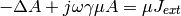
in a two-dimensional cross-section containing a conductor and an iron object as shown in the following schematic picture:

The computational domain is a rectangle of height 0.003 and width 0.004. Different material markers are used for the wire, air, and iron (see mesh file domain2.mesh).
Boundary conditions are zero Dirichlet on the top and right edges, and zero Neumann elsewhere.
Solution:

Complex-valued weak forms:
template<typename Real, typename Scalar>
Scalar bilinear_form_iron(int n, double *wt, Func<Scalar> *u_ext[], Func<Real> *u, Func<Real> *v, Geom<Real> *e, ExtData<Scalar> *ext)
{
scalar ii = cplx(0.0, 1.0);
return 1./mu_iron * int_grad_u_grad_v<Real, Scalar>(n, wt, u, v) + ii*omega*gamma_iron*int_u_v<Real, Scalar>(n, wt, u, v);
}
template<typename Real, typename Scalar>
Scalar bilinear_form_wire(int n, double *wt, Func<Scalar> *u_ext[], Func<Real> *u, Func<Real> *v, Geom<Real> *e, ExtData<Scalar> *ext)
{
return 1./mu_0 * int_grad_u_grad_v<Real, Scalar>(n, wt, u, v);
}
template<typename Real, typename Scalar>
Scalar bilinear_form_air(int n, double *wt, Func<Scalar> *u_ext[], Func<Real> *u, Func<Real> *v, Geom<Real> *e, ExtData<Scalar> *ext)
{
return 1./mu_0 * int_grad_u_grad_v<Real, Scalar>(n, wt, u, v); // conductivity gamma is zero
}
template<typename Real, typename Scalar>
Scalar linear_form_wire(int n, double *wt, Func<Scalar> *u_ext[], Func<Real> *v, Geom<Real> *e, ExtData<Scalar> *ext)
{
return J_wire * int_v<Real, Scalar>(n, wt, v);
}
After loading the mesh and performing initial mesh refinements, we create an H1 space:
// Create an H1 space with default shapeset.
H1Space space(&mesh, bc_types, essential_bc_values, P_INIT);
The weak forms are registered as follows:
// Initialize the weak formulation.
WeakForm wf;
wf.add_matrix_form(callback(bilinear_form_iron), H2D_SYM, 3);
wf.add_matrix_form(callback(bilinear_form_wire), H2D_SYM, 2);
wf.add_matrix_form(callback(bilinear_form_air), H2D_SYM, 1);
wf.add_vector_form(callback(linear_form_wire), 2);
Short version¶
The only thing worth noticing here is that a Boolean variable ‘is_complex = true’ is passed into the function solve_linear_adapt():
// Adaptivity loop.
Solution *sln = new Solution();
Solution *ref_sln = new Solution();
WinGeom* sln_win_geom = new WinGeom(0, 0, 600, 350);
WinGeom* mesh_win_geom = new WinGeom(610, 0, 520, 350);
bool verbose = true; // Print info during adaptivity.
bool is_complex = true;
// The NULL pointer means that we do not want the resulting coefficient vector.
solve_linear_adapt(&space, &wf, NULL, matrix_solver, H2D_H1_NORM, sln, ref_sln,
sln_win_geom, mesh_win_geom, &selector, &apt, verbose,
Tuple<ExactSolution *>(), is_complex);
Long version¶
In the long version, the variable ‘is_complex’ is used at several places. First during the matrix initialization:
// Initialize matrix solver.
bool is_complex = true;
Matrix* mat; Vector* rhs; CommonSolver* solver;
init_matrix_solver(matrix_solver, get_num_dofs(space), mat, rhs, solver, is_complex);
Then in the solution of the linear problem on the globally refined reference mesh:
// Solve the reference problem.
// The NULL pointer means that we do not want the resulting coefficient vector.
solve_linear(ref_space, &wf, matrix_solver, ref_sln, NULL, is_complex);
And finally in the global projection on the coarse mesh:
// Project the reference solution on the coarse mesh.
info("Projecting reference solution on coarse mesh.");
// NULL means that we do not want to know the resulting coefficient vector.
project_global(space, H2D_H1_NORM, ref_sln, sln, NULL, is_complex);
Otherwise everything is the same as in example 10.
Let us compare adaptive -FEM with linear and quadratic elements and the -FEM.
Final mesh for -FEM with linear elements: 18694 DOF, error = 1.02 %
Final mesh for -FEM with quadratic elements: 46038 DOF, error = 0.018 %

Final mesh for -FEM: 4787 DOF, error = 0.00918 %

Convergence graphs of adaptive h-FEM with linear elements, h-FEM with quadratic elements and hp-FEM are shown below.

Time-Harmonic Maxwell’s Equations (14)¶
Git reference: Tutorial example 14-hcurl-adapt. Long version: 14-hcurl-adapt-long.
This example solves the time-harmonic Maxwell’s equations in an L-shaped domain and it describes the diffraction of an electromagnetic wave from a re-entrant corner. It comes with an exact solution that contains a strong singularity.
Equation solved: Time-harmonic Maxwell’s equations
(1)
Domain of interest is the square 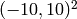 missing the quarter lying in the fourth quadrant. It is filled with air:

Boundary conditions: Combined essential and natural, see the main.cpp file.
Exact solution:
(2)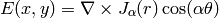
where is the Bessel function of the first kind,
 the polar coordinates and
the polar coordinates and  . In
computer code, this reads:
. In
computer code, this reads:
void exact_sol(double x, double y, scalar& e0, scalar& e1)
{
double t1 = x*x;
double t2 = y*y;
double t4 = sqrt(t1+t2);
double t5 = jv(-1.0/3.0,t4);
double t6 = 1/t4;
double t7 = jv(2.0/3.0,t4);
double t11 = (t5-2.0/3.0*t6*t7)*t6;
double t12 = atan2(y,x);
if (t12 < 0) t12 += 2.0*M_PI;
double t13 = 2.0/3.0*t12;
double t14 = cos(t13);
double t17 = sin(t13);
double t18 = t7*t17;
double t20 = 1/t1;
double t23 = 1/(1.0+t2*t20);
e0 = t11*y*t14-2.0/3.0*t18/x*t23;
e1 = -t11*x*t14-2.0/3.0*t18*y*t20*t23;
}
Here jv() is the Bessel function  . For its source code see the
forms.cpp file.
. For its source code see the
forms.cpp file.
New in this example is the fact that we solve in the Hcurl space:
// Create an Hcurl space with default shapeset.
HcurlSpace space(&mesh, bc_types, essential_bc_values, P_INIT);
Also the refinement selector is for the Hcurl space:
// Initialize refinement selector.
HcurlProjBasedSelector selector(CAND_LIST, CONV_EXP, H2DRS_DEFAULT_ORDER);
Short version¶
In the short version we need to use the H2D_HCURL_NORM:
// Adaptivity loop.
Solution *sln = new Solution();
Solution *ref_sln = new Solution();
ExactSolution exact_sln(&mesh, exact);
WinGeom* sln_win_geom = new WinGeom(0, 0, 440, 350);
WinGeom* mesh_win_geom = new WinGeom(450, 0, 400, 350);
bool verbose = true; // Print info during adaptivity.
bool is_complex = true;
// The NULL pointer means that we do not want the resulting coefficient vector.
solve_linear_adapt(&space, &wf, NULL, matrix_solver, H2D_HCURL_NORM, sln, ref_sln,
sln_win_geom, mesh_win_geom, &selector, &apt, verbose, &exact_sln, is_complex);
Long version¶
In the long version it is worth noticing that H2D_HCURL_NORM is used in the global projection
// Project the reference solution on the coarse mesh.
info("Projecting reference solution on coarse mesh.");
// NULL means that we do not want to know the resulting coefficient vector.
project_global(space, H2D_HCURL_NORM, ref_sln, sln, NULL, is_complex);
as well as in the initialization of the Adapt class:
// Calculate element errors.
info("Calculating error (est).");
Adapt hp(space, H2D_HCURL_NORM);
hp.set_solutions(sln, ref_sln);
double err_est_rel = hp.calc_elem_errors(H2D_TOTAL_ERROR_REL | H2D_ELEMENT_ERROR_REL) * 100.;
The code for the weak forms looks as follows:
template<typename Real, typename Scalar>
Scalar bilinear_form(int n, double *wt, Func<Scalar> *u_ext[], Func<Real> *u, Func<Real> *v, Geom<Real> *e, ExtData<Scalar> *ext)
{
return 1.0/mu_r * int_curl_e_curl_f<Real, Scalar>(n, wt, u, v) -
sqr(kappa) * int_e_f<Real, Scalar>(n, wt, u, v);
}
template<typename Real, typename Scalar>
Scalar bilinear_form_surf(int n, double *wt, Func<Scalar> *u_ext[], Func<Real> *u, Func<Real> *v, Geom<Real> *e, ExtData<Scalar> *ext)
{
cplx ii = cplx(0.0, 1.0);
return ii * (-kappa) * int_e_tau_f_tau<Real, Scalar>(n, wt, u, v, e);
}
scalar linear_form_surf(int n, double *wt, Func<scalar> *u_ext[], Func<double> *v, Geom<double> *e, ExtData<scalar> *ext)
{
scalar result = 0;
for (int i = 0; i < n; i++)
{
double r = sqrt(e->x[i] * e->x[i] + e->y[i] * e->y[i]);
double theta = atan2(e->y[i], e->x[i]);
if (theta < 0) theta += 2.0*M_PI;
double j13 = jv(-1.0/3.0, r), j23 = jv(+2.0/3.0, r);
double cost = cos(theta), sint = sin(theta);
double cos23t = cos(2.0/3.0*theta), sin23t = sin(2.0/3.0*theta);
double Etau = e->tx[i] * (cos23t*sint*j13 - 2.0/(3.0*r)*j23*(cos23t*sint + sin23t*cost)) +
e->ty[i] * (-cos23t*cost*j13 + 2.0/(3.0*r)*j23*(cos23t*cost - sin23t*sint));
result += wt[i] * cplx(cos23t*j23, -Etau) * ((v->val0[i] * e->tx[i] + v->val1[i] * e->ty[i]));
}
return result;
}
// Maximal polynomial order to integrate surface linear form.
Ord linear_form_surf_ord(int n, double *wt, Func<Ord> *u_ext[], Func<Ord> *v, Geom<Ord> *e, ExtData<Ord> *ext)
{ return Ord(v->val[0].get_max_order()); }
Solution:

Final mesh (h-FEM with linear elements):
Note that the polynomial order indicated corresponds to the tangential components of approximation on element interfaces, not to polynomial degrees inside the elements (those are one higher).
Final mesh (h-FEM with quadratic elements):

Final mesh (hp-FEM):

DOF convergence graphs:

CPU time convergence graphs:

Table Of Contents
- Hermes2D Tutorial: Part II (Automatic Adaptivity)
Previous topic
Hermes2D Tutorial: Part I (Linear Problems)